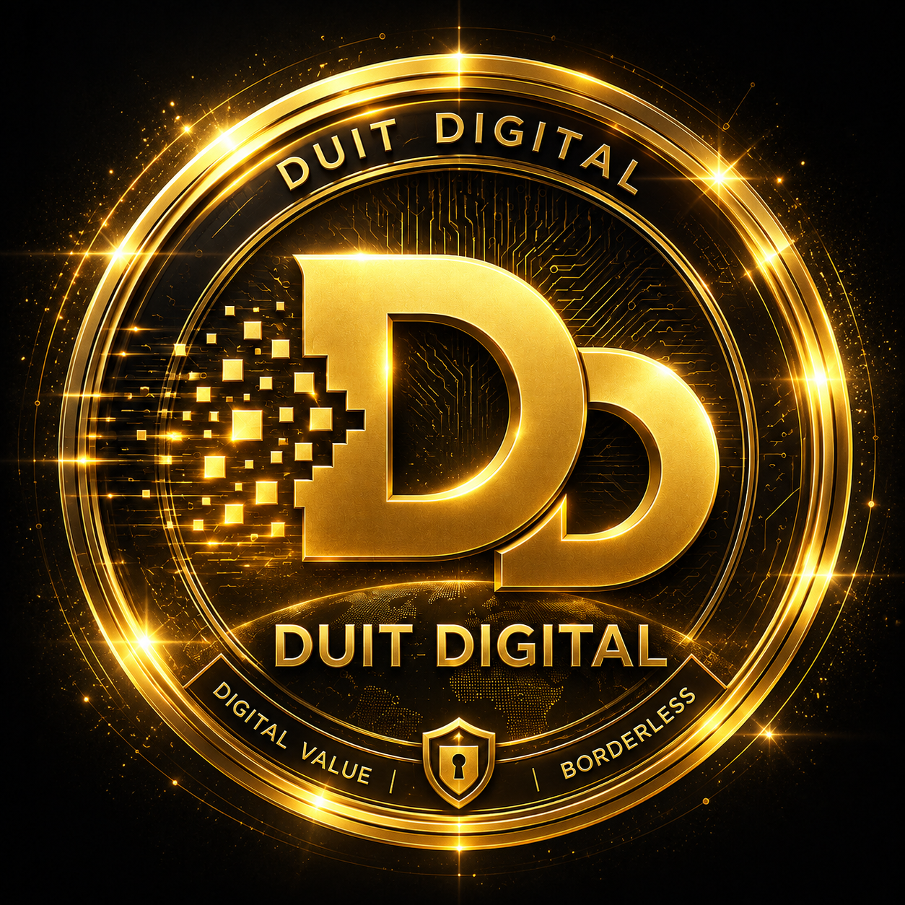

Connecting users, communities, and businesses through artificial intelligence, blockchain technology, digital rewards, and practical Web3 utility.
The digital world continues to grow, but many people still find Web3 technology complex and difficult to access.
Duit Digital (DUIT) aims to simplify digital participation by creating an ecosystem where technology, community, and businesses can connect through useful applications.
Duit Digital Advertisement Ecosystem helps businesses connect with communities through digital campaigns, creator partnerships, and AI-assisted marketing support.
Discover Web3 technology, participate in activities, and explore ecosystem features.
Create content, share ideas, and contribute to community growth.
Collaborate with Duit Digital (DUIT) to develop future opportunities.
Your wallet becomes the connection point between users and the Duit Digital (DUIT) ecosystem.
Designed for future Web3 wallet interaction and Solana ecosystem compatibility.
Built around fast and efficient blockchain technology.
Supporting transparent blockchain-based verification.
Built for the future of digital interaction through blockchain technology and Web3 wallet compatibility.
Fast and efficient blockchain infrastructure designed for scalable Web3 applications.
Supporting seamless wallet experiences for users entering the Web3 ecosystem.
An intelligent assistant designed to help users understand, explore, and interact with the DUIT ecosystem.
A gateway for users to connect with Web3 services, digital assets, and future ecosystem features.
A participation-based system designed to recognise meaningful community activities.
Connecting businesses with digital communities through campaigns and engagement.
Duit Digital (DUIT) creates a connection between businesses and communities through a digital advertising ecosystem. Businesses can use DUIT to access advertising opportunities, while community members participate in campaigns and receive rewards in DUIT.
Businesses can promote products and services by using DUIT within the ecosystem and connect with digital communities.
Building a more accessible digital ecosystem through AI, blockchain, and community participation.
Community members can participate in ecosystem activities and receive DUIT rewards based on their contribution and engagement.
Building a connected ecosystem where businesses, communities, and digital assets interact through practical Web3 utility.
The DUIT token is designed to support ecosystem interaction, community programs, digital rewards, and future platform services.
Phase 1
Foundation & Community Building
↓
Phase 2
AI & Ecosystem Development
↓
Phase 3
Expansion & Partnerships